Tabletop Battles’ Eldfall Chronicles Northern Wind Campaign Report, Part II
Welcome back to Sam and Jake's ongoing coverage of Northern Wind, Freecompany's dungeon-crawler board game pitting a ragtag group of misfits against the Oni horde of Mt. Byodo. When last we left our heroes, they had passed the "all your stuff gets stolen" cutscene and tripped the Magic Breaker, restoring their armaments both arcane and mundane. Thusly equipped, they traveled to the Hilltop Temple, the last stop before leaving civilization behind.
Of course, the Oni have gotten here first.
Our heroes arrive seeking shelter and respite, but immediately, something appears wrong: there is nobody to greet them outside the temple, and as they watch, an Oni brute shambles into view. They quickly hide and make a plan: make it over the rickety bridge outside the temple, search for survivors, and push on.
Mission 4 - Hilltop Temple
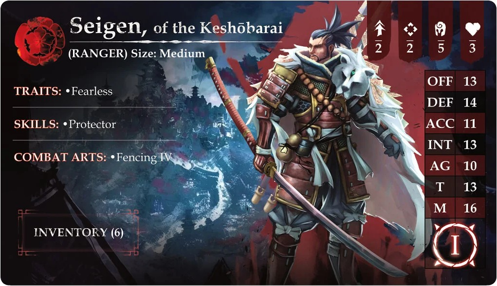
Sam's Mission
Because Na'ra and Anari fully cleared the Profane Burners (and I therefore have Purple Fate C), Na'ra gets the chance to do a Ghost Sniff (an INT role at -3) which she heroically passes - meaning that I spot the undead right away, rather than having to stumble into them. There are two Vengeful Spirits in front of me, and then a Forgotten Hero (an archer samurai skeleton) on the bridge.
But the whole party is together now, so there's nothing to worry about. Tharos goes first, shooting a spirit. The crossbow bolt passes right through, but that's a Weak Point inflicted. Reacting, both Spirits drift into the square where Seigen and Na'ra are waiting for them. Seigen gets to show off his Sweep attack - he hits both spirits, shrugs off their counterswing, and poofs one into nonexistence. Na'ra makes short work of the second.
The archer might be a problem. The bridge he's on is too narrow for our party, and we'll have to go single file. Anari prepares by enchanting Tharos's bow with flame, and Tharos darts out to the end of the bridge, taking a potshot at Mr. Skellington. He inflicts a weak point, but the skeleton archer's aim is true, and his Reactive shot hits Tharos (possibly in the knee) and Incapacitates him. Luckily, Tharos was carrying one of my three Medicines and will be getting up soon, but I was hoping those would last a little longer.
Anari deploys her ice spikes and hits the skeleton, inflicting another Weak Point, but that's it. It's time for the hostiles' active turn, which means that we're flipping a Chaos Deck card for the first time!
The result: nasty weather. A blizzard, in fact, which makes the whole board Dense and Hazy. This radically cuts down on the effectiveness of ranged attacks... which is actually good news, because that skeleton prefers to use his bow if at all possible, and his turn is utterly ineffective due to the flying snow. Our heroes' ranged reactions are as well, but on our next turn, Na'ra bounds up and, you guessed it, shoves his bony ass right off the bridge. Splat!
With the enemies dealt with, it's time to explore. Our heroes have noticed a small ledge down below the bridge; perhaps, if they had a [Climbing Rope], they could make it down there! However, it's not all good news: there's another slightly beaten-up Oni Marauder, though this one has some loot.
Fortunately, the gruesome foursome has enough time to plan their attack, and Seigen stands one tile ahead of everyone else, shielding them with his body. I'm able to lard up the Oni with Weak Points (and a Wound) before he can act, so when his turn comes around, Seigen can React with a melee attack, forcing a Confrontation that Seigen automatically wins with a Critical Hit by cashing in Weak Points. Score! The party makes short work of biggun and goes through his pockets.
Surprise! It's rope.
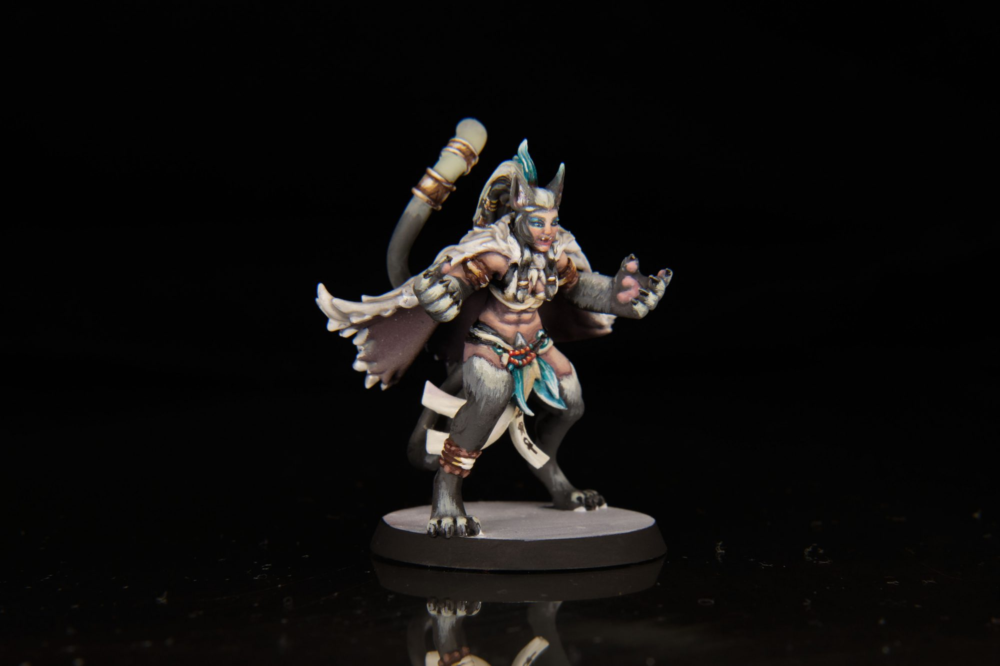
Na'ra. Credit: keewaNa'ra takes it and goes to find out what's on the ledge, while the rest of us approach the temple courtyard. Turns out it's occupied: there's a full-strength Oni Marauder (a Lieutenant, in fact - a Boss Monster modification that, at least in my edition, appears to have no mechanical effect) and he's guarding the gate to the temple. When he spots us, he smashes the gate controls, and the heavy portcullis starts to descend.
Tharos darts forward and manages to stop the gate from crashing, but that's all he can do - if he moves or takes any other action, it will fall. Chuckling, the Oni lumbers forward, and we notice some poor, tied-up prisoners in the yard.
I'm also told to place a Dire Ambush Chaos card into the deck, fourth from the top. I am not looking forward to what happens when it flips.
When the next hostile turn comes around, the Chaos Deck flips another Weather condition: Sleet. Strangely, this actually cancels both weather conditions, meaning that, effectively, nothing happens. Stranger still, this requires me to shuffle the cards into the deck - so now the Dire Ambush could be anywhere.
The sudden clear skies are not good news for Tharos, who is now stuck in plain sight. The Oni walks right up to him and swings that huge club, and Tharos decides discretion is the better part of valor; he Dodges backwards, luckily escaping a richly deserved squashing, but that means the gate falls the rest of the way and blocks the path. Great.
Na'ra, a skilled climber, uses the rope to climb down to the ledge, and finds that she can climb up the far side into the courtyard. This she does, while my other heroes try to bash open the gate, and the Oni... sort of taunts them from the far side? It's a little odd, to be honest, him just standing here. He doesn't even notice Na'ra sneaking into the courtyard behind him; the way Oni Marauders' Reactive turns are described, he won't react at all to her as long as she doesn't get too close.
Na'ra manages to free some prisoners, including Asano (again), and finds some loot: another dagger, a lantern, and some Precious Materials, which can be used later on to activate some advanced synergy powers. The rest of the party is having a tougher time of it: the gate has five hit points and armor 8, which means that, even enhanced by Anari's sorcery, Seigen struggles to scratch it. The whole party unloads into the gate with no effect at all. Meanwhile, on the Hostile Turn, the Oni notices Na'ra and goes chasing after her - but a truly heroic series of Dodge reactions keeps her unscathed, as she flips and darts away from him one tile at a time.
The rest of the party decides "fuck this" and hurries over to the ledge. Without Na'ra's climbing ability, getting them down the rope is painfully slow; you can't take any action if you Climb as a special movement, so you're limited to your base movement, without even a Dodge for an extra square. Worse, as they're shimmying like the world's least impressive gym class, that Dire Ambush shows up, spawning in an Oni Marauder and a Red Yaksha (another big, scary Oni).
This is genuinely bad. Those two are beelining for the gate, are poised to smash it to splinters, will then join their boss, and our heroes can't escape if there are any hostiles in the courtyard. Luckily, Na'ra has been continuing her hot Dodge streak, and now the party is all united. The Oni, seeing a cluster of enemies, decides to Hulk Smash the team, but Seigen's Fencing ability reduces him to one swing. Seigen and the Oni match swings in their Confrontation role, but while Seigen wounds the Oni, the big boy fails to crack Seigen's armor or Anari's, which is actually kind of impressive. Tharos, meanwhile, dodges nimbly away. From there, it's pretty much over; I have four heroes' worth of magic and weaponry, and the big boy goes down just as his friends start hacking at the fallen gate. Before they can get through, we're through the temple door and away, pausing only so Asano can hand us his special heirloom cloak.
Asano's Magic Puffer Jacket is actually pretty cool - I'm going to give it to Seigen. It makes him resistant to Profane enemies, which I imagine I'll be seeing a lot of. I have to play a little bit of inventory juggling at this point, with all the crap I've looted, but it turns out not to be a problem. Tharos is apparently yoked as hell, and his 10-item storage capacity easily encompasses all of the various sharp and shiny things we've scrounged so far. Plus, his hawk came back. Remember he had a hawk?
I have some Weak Points - Tharos, Anari and Seigen each took one - and that's not great. They persist between missions, so I'll have to figure out if there's some way to get rid of them before I meet an enemy that can use them.
Jake's Mission
Reading through Sam's experience, I was struck with how different things can play out even though we're playing the same mission with the same characters. In fact, there aren't very many possible ways for our paths to have branched at this point and yet our finales played out quite differently. Neat!
This mission is also continuing the trend of these tutorial missions where game mechanics are gradually added. It's a great way to introduce players to what's honestly quite a lot of moving parts, but since it's broken up it doesn't feel overwhelming. This time around we're adding in the Chaos Deck. The Chaos Deck is a fixed list of cards for each mission -- we'll be gradually adding and removing cards from it as the story continues, shaping it into a unique set of threats and surprise situations throughout the gameplay. For the most part, they're bad things. You already got a taste of some of the nasty ambushes possible, along with various weather events and other unpleasant things that can happen to our heroes.
Speaking of weather, now that the Chaos Deck is in play, we start each mission by flipping the top three cards of the deck. If any of them are weather cards, we start the game with that weather effect in play. Considering this story takes place while our brave heroes are scaling a frigid mountain covered in snow, a lot of these weather events are going to play into that.
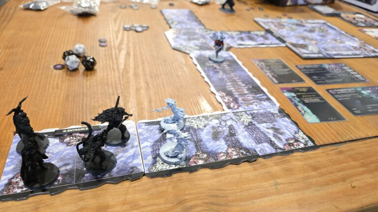
One similarity in my game with Sam's is that my Na'ra also was able to pass her INT check in order to trigger the first encounter immediately. This was great because the Vengeful Spirits would otherwise have spawned in between my party members and it doesn't take a tactical genius to realize that wouldn't be ideal.
I took a careful look at the Vengeful Spirits' behavior card to see what exactly they would do. It turns out that as long as you aren't within melee range and aren't attacking them, they're content to not react at all and will just float there menacingly. I feel like carefully managing these behaviors is going to be super important as even more threatening monsters enter the fray. Seeing my opportunity here, I chose to have Anari activate first to enchant Seigen's sword with Burning Touch which would let him ignore the annoying Incorporeal ability the ghosts have. My beefy Ranger from the Empire of Soga went next by stepping into the space with the spirits and simply chopping though both of them with his flaming two-handed sword. That was easy.
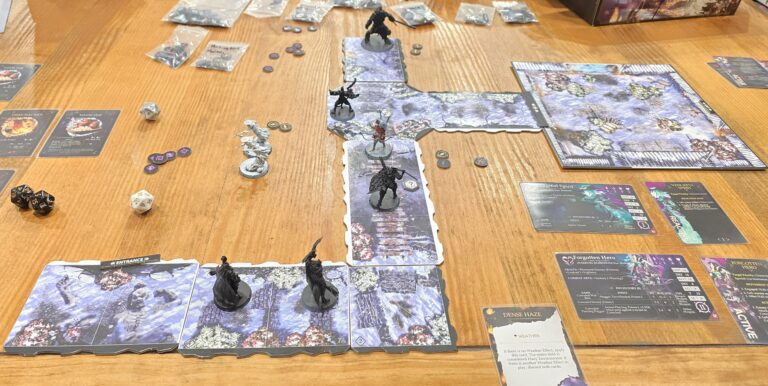
Easy aside from the fact that Anari caught a reactive shot from the Forgotten Hero in her face, that is. She immediately dropped after enchanting Seigen. This is starting a long trend of Anari being a problematic party member for me.
The Forgotten Hero wasn't much of a problem after this point because it had spent both of its action points firing at Anari (successfully) and Seigen (unsuccessfully). Na'ra moved up and used some totally okay profane necromancy magic to heal Anari before rushing forward some more. The Mau can really move. Once back on her feet, the Helian threw out a barrage of Ice Spikes (a STK 3 ranged spell is so good) and was accompanied by two shots from Tharos' fancy crossbow to make it class dismissed for Doctor Skelebones.
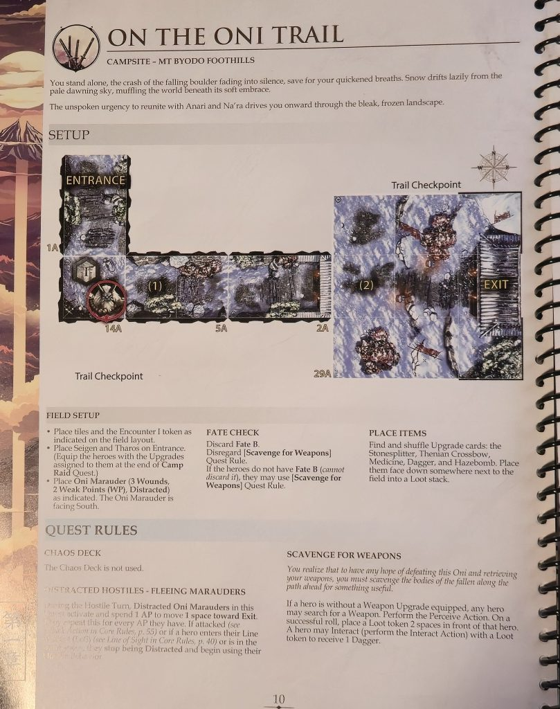
Why did I rush forward? I kind of forgot but I think the idea was I wanted to trigger the encounter as soon as possible to get it over with. No, that doesn't make much sense in hindsight. Regardless, the injured Oni Marauder (with convenient rope) pops up, beats up my heroes, and eventually goes down. I have to use Medicine to bring Na'ra back to her feet and a Healing Potion on Seigen to top him off as well, but after that point I have the secret path unlocked. I trigger the "cutscene" that causes the gate to fall, but I decide not to bother trying to catch it and just let the thing drop closed. The Oni Raidleader gets pissed, but all my heroes just book it away and down through the secret passage to pop up behind him.
Fortunately, Na'ra and Tharos both have the Climb skill, so they're able to navigate down to the ledge and back up into the Temple Courtyard without slowing down. Seigen and Anari follow along at a slower pace both because they have to spend an entire activation to climb and because they're both only moving two spaces instead of the Rin who can move 3.
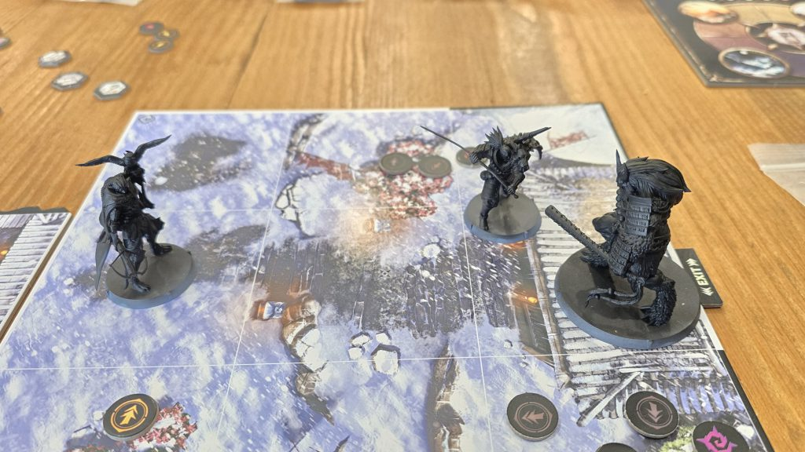
All four of my heroes make it into the courtyard and start beating on the Oni Raidleader. He doesn't go down without a fight -- the short version is that I burn through all of my remaining healing items before striking the killing blow. They do all manage to take out the Raidleader, tend their wounds, and free the prisoners before the Dire Ambush card is revealed and after reading Sam's experience I am pretty grateful for it. Seigen gets his fancy Warding Pelt but also walks out with a weak point and a wound. Na'ra is sporting a weak point herself. Surely this won't be a problem in the next mission.
Closing Thoughts
Sam: This mission is quite a bit more complex than the prior three, with a real "let's put it all together" vibe. That said, there were a few moments here that made me scratch my head. Some are likely just copyediting errors (is the Oni by the exit a Lieutenant or a Raidleader? And is there supposed to be some mechanical modification from his status, whatever it is? Just using the Raidleader card?), but others feel a little baffling. The Dire Ambush - is the intent really that you shuffle the deck when you draw a second Weather event (not that rare an occurrence, given the limited size of the deck)? Is the gate supposed to be that tough to crack through? I ended up using the ledge for everyone, because I could tell it was going to take forever to hack down the gate. And what about Climb - how does that work? The way I played it, my characters can, on their activation, take a normal move and treat the rope as a one-tile step, but they can't do any actions if that's what they choose to do with their turn.
What is the Lieutenant/Raidleader supposed to do when the gate drops with him on the other side from the party? Just stare at them through the bars? Is the party really supposed to be able to handle a Red Yaksha and two Marauders at once if you're too slow in clearing the gate/killing the boss? It felt at times a little loose, like things weren't quite coming together in the way the developers intended.
Overall, though, it was fun to be put through a bit more of a high-stakes challenge. Now the Moon Dial, which tracks the time we've spent, and the Event deck come into play.
Jake: The Oni Raidleader was a showcase in how the threat level of a monster can jump up with just a few tweaks, namely having a higher STA value which results in more action points each turn. In fact, aside from having two additional hit points those are the only changes between this boss and a vanilla Oni Marauder, but it was felt. I guess the unit card also has spooky glowing eyes which is a nice touch.
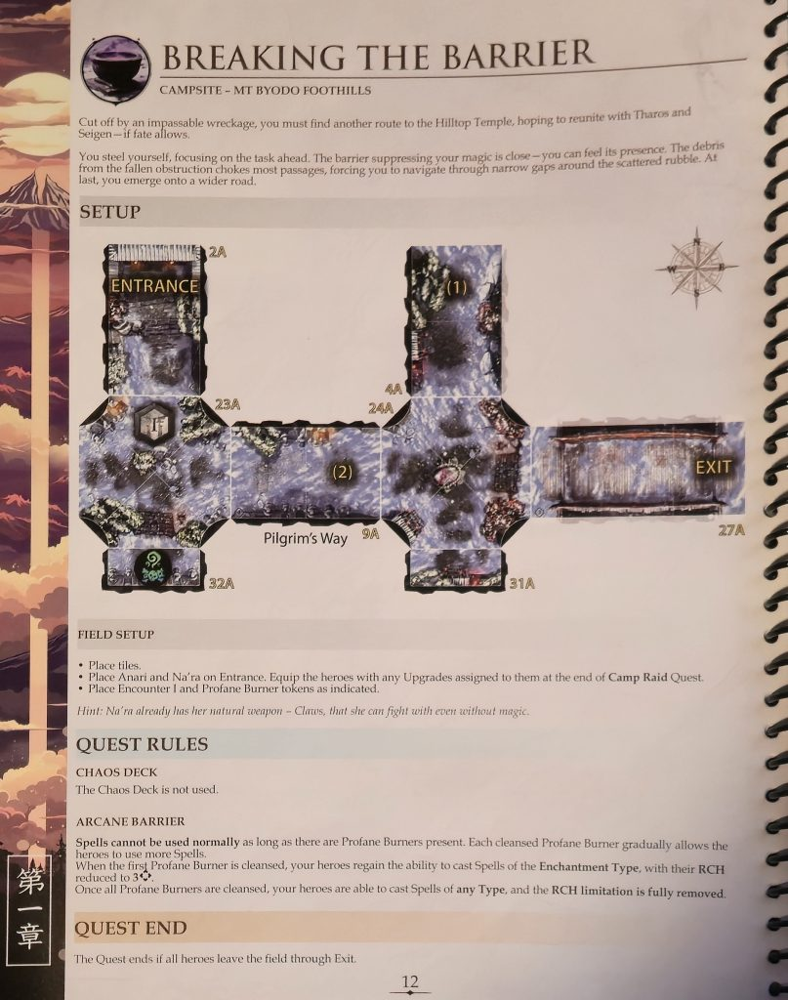
As for Sam's question on climb, I did have to look this one up while playing because I missed it in the first go-through of the book.
The way an activation works is that you spend the activation token, then the character declares a Normal Movement or Special Movement. After declaring it, the model is moved. Following the movement step, the model declares a Normal Action or Special Action. Essentially, you can combine a Normal Movement and Normal Action or pick a Special Movement or pick a Special Action. That's not exactly how it works out, but it's close enough to get the point across.
There are only two Normal Movement options -- one is to walk (move equal to the model's speed) and the other is to idle (only rotate but otherwise remain stationary, but this is the only way to do a Special Action). The Special Movement options are Run (move twice the model's speed), Climb (move the model's speed over elevated ground), or Jump (move the model's speed across a space). If a model has the Climbing skill like Tharos or Na'ra do, they can do a Climb Special Movement as a Normal Movement, allowing them to follow it up with any other Normal Action like an attack or dodge.
Mission 5 - Byodo Summit Gateway
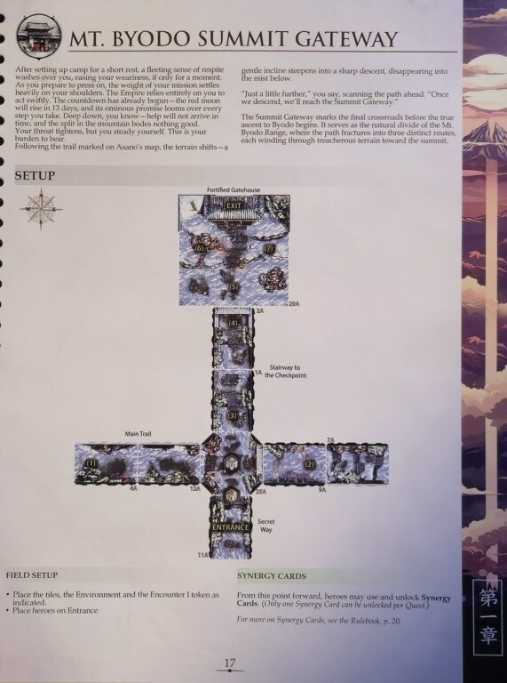
Sam's Mission
Here we are - the last stop before we begin our climb. The Summit Gateway is the final crossroads before the "true ascent begins," and divides the path in three: westward through Mt. Akashi, eastward through Mt. Senjo, or straight ahead, through the Shivering Valley of Shimodani.
On the way, I draw my first two event cards, and of course it's nothing good; Ill Omens distributes four Weak Points among my heroes (leaving Na'ra with one and everyone else with two), and Anari is wracked with Night Terrors that leave her at -2 to all stats this mission. At least she can still hand out buffs. I select Bolstered Prowess as the Synergy I'm trying to achieve this mission. As a refresher, Synergy cards start out locked, and have an unlock condition. Every time you achieve it, you get a Synergy point, and when you reach the target number of points the Synergy unlocks as a permanent buff to one of your characters. This one scores when an Enchanted hero incapacitates an enemy, and requires two points to unlock - and I have a Precious Materials to give it a free point. Once unlocked, the hero who unlocked it gets +3 OFF and DEF for as long as they're enchanted. Not bad on Seigen!
The Gateway path is deceptively simple: a straight road, with branches on each side. One has an Oni Marauder, the other a Forgotten Hero, but they're both facing away from me and Distracted. Per the mission rule, they still Distracted until one of them can see us, but they're positioned 3 tiles away from the path forward, and a Crouched hero isn't in LOS outside of 3 spaces away. I could in theory sneak past them in a crouch, but I'd rather not leave them alive as I pass by.
I hand out some enchantments: Tharos gets Anari's Burning Touch, while Seigen gets Na'ra's Necrotic Wound. My party aim for the Forgotten Hero first, and Tharos manages to snipe him in the back of the head with a Burning crossbow bolt. Burn means that when you inflict a wound, you get to roll damage again, at 0 armor this time, and potentially deal a second wound - thus, Tharos blows the hero's head smoove off without it even getting to un-Distract.
I'm not totally sure about how this works, but I don't think that the Marauder is un-Distracted by this either, since the Hero never turned around to draw LoS to me. So I sneak over to get ready to pounce on him, too. The turn flips over to the Hostiles, which means we flip a Chaos Card, and a freezing wind blows in. This is a pretty brutal event; all characters have to test Toughness at the start of each turn (though they can add their armor as a modification) or become Fatigued, which effectively costs them their turn - and if they have any wounds on them, they might take another. But the Hostile Oni doesn't have LOS to my lurking team, and just stands there shivering.
On my turn, things start to go right. My heroes all pass their toughness checks against the cold and move in on the Oni, fully enchanted and ready to take care of business. This happens in fairly short order; Tharos peppers him with bolts, letting the Oni waste both of his reactive AP dodging towards him, and Na'ra and Seigen move in to finish him off. Seigen deals the finishing blow while enchanted with Anari's Burning Touch, activating my Synergy ability.
For the moment, there's no hostiles on the field; it's unclear whether we still have to have a Hostile Turn, so I do out of an abundance of caution. Nobody fails their toughness check again, though it's close for poor Anari, who isn't dressed for this. The Chaos Deck spews forth a tier 1 enemy - one of those dinky little spirits, which Anari trivially banishes with ice shards as a Reaction. On my turn, though, the cold is a little too much for poor Na'ra, who really isn't dressed for this. The others advance, spawning another Oni Marauder guarding the gateway to the exit room and causing some treasure to appear in the room itself.
Again, we go hard into this Oni, even with Na'ra out of commission. Anari peppers him with ice shards, slowing him and damaging him, and Tharos and Seigen finish him off before he can take a turn. Even better, the next Chaos card is weather as well, which cancels the freezing wind and leaves the battlefield clear.
We're on fire! Nothing can go wrong! This is not foreshadowing!
Our heroes start off by looting the courtyard, uncovering a Magatama (which gives the bearer - currently Tharos - an extra wound) and a Weaver's War Scepter, which, once I trade it to Anari, will give her magic attacks a boost. Seigen walks up to the exit, which has the last encounter tile on it... and here comes Guren, the Red Rasetsu.
Remember how I mentioned Demonic Sexual Dimorphism in my original Northern Wind review? Guren is a classic example; I would describe her look as "fanservice-y Karlach," but her stat card makes my eyes water. Three Stamina, ten wounds, Berserker 3 to shrug damage and give her a nasty combat art, Duelist to cancel enemy combat arts, Cleave to do two wounds for each one that goes through, and she can exploit my Weak Points to give herself Unstoppable, meaning you can't cancel her hits in Confrontation (though she can't cancel yours either, the way it's worded).
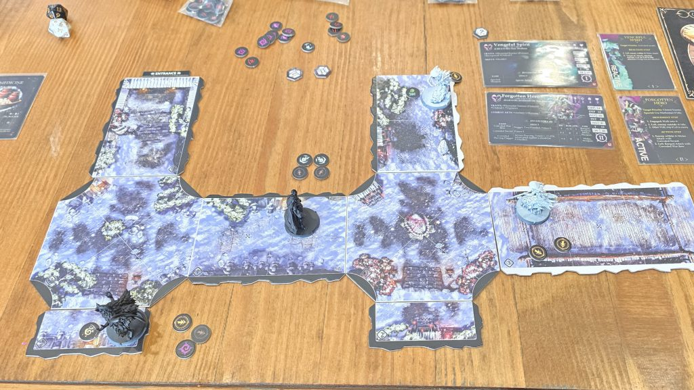
Guren, the Red Rasetsu. Credit: keewaStill, the mission ends if I can drop her HP below 4, so I only have to do 7 damage. That's... doable, right? Right? We'll see.
Seigen's first up. He hacks at her, and my dice are pretty hot; her first counterattack misses entirely, and that cost her one of the WP on Seigen. I carve into her for a couple of damage, inflicting Bleed as well. My second attack isn't as lucky - I deal an additional point of damage, as well as a Weak Point from an attack that hits but doesn't penetrate, but she spends her second WP and gets a hit in on me as well. That one hit cleaves Seigen for two damage (but fortunately not Crippling or Panicking him, as he passes his Toughness test and is Fearless).
Na'ra moves in and claws at Guren, inflicting a fourth wound and the Weakened and Poisoned states from her Necrotic Wound-boosted attack. I imagine she has some extremely annoying neko-chan battle cry - "Meow! Take that!" - but the counterswing puts Na'ra down and, with Sweep, takes out Seigen's last wound as well. So both of my my melee hitters are down for the count. Tharos takes a shot, risking the shooting into melee penalty, but fails to penetrate Guren's armor. At least she gets a Weak Point.
Fortunately, Na'ra has medicine, and stands up in the next Strategic phase. For once I draw a positive Chaos card, which would let me heal wounds by cashing in AP, although the only character with missing wounds is Seigen and he's Incapacitated (and therefore has no AP).
The enraged Guren doesn't take any damage from Bleed or Poison, and loses the Weakened and Poisoned states. She's hopping mad now and going after Na'ra. Fortunately, Na'ra has a couple of dodges available; unfortunately, "a couple" is fewer than "three," and Guren is too accurate to simply hope she misses. On the third swing, Na'ra is out of gas, and she goes down.
Thanks to the dodging, though, Guren is now out of melee range, and so Anari and Tharos both React and hit her with ranged attacks, putting her fifth Wound and third Weak Point on her. She still doesn't take any Bleed damage, but now it's my turn; Tharos backs off and shoots her twice, and with Assassinate, he's able to knock the last couple of wounds off of her.
Whew!
With the Rasetsu out of the way, we are approached by a Guildsworn Knight, our second DMPC of the adventure. He is nonplussed at the fact that the gigantic army he expected has been reduced to four people, but seems to believe that we can still pull it off, which is frankly not a thrilling conclusion for me; it certainly suggests that either he's delusional about our chances now, or the planning stage of this mission misread the required force by several orders of magnitude. But, you know, we soldier on, stiff upper lip and all that, lions led by... do they have donkeys in Calad? Or lions, for that matter?
We're fully healed by DM fiat the Guildsworn Knight's totally rad first aid skills, and we all level up to Level 2. Critically, this means Na'ra and Tharos pick up their second Wound (and Anari can carry the Magatama and get her second that way). Anari gets Level 3 Cryomancy and Level 2 Enchanting, giving me some really potent new spells. And everyone picks up some additional stats scattered about, which is welcome.
The Knight tells us that we can take the Western route and face Guren again - that route has fewer, but stronger enemies. Or we could go East and face a blue Rasetsu, a prospect which does not thrill me much. Or we could go straight ahead through the Shivering Valley, but since both the in-game text and the italicized warnings in the campaign book both say that's not an option for beginners, I think I'll pass. We're heading West; if muscle mommy Guren wants to step on me again, well, that's a Woman's Prerogative.
Jake's Mission
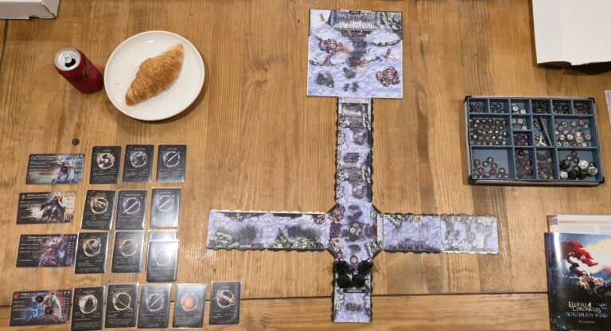
Here's everything all set up before the heroes take their first turn. I've picked up a Gamegenic token organizer which comes in handy given the massive number of tokens that this game comes with. Also pictured is a Costco croissant. Yum.
I thought it'd be nice to get a little snapshot of where my heroes were all at when coming into this final tutorial mission. I've actually burned through all of the consumable items by this point; I'm making a point to not hoard items which is my tendency in most games. I don't want to end this game with a chest full of untouched healing potions!
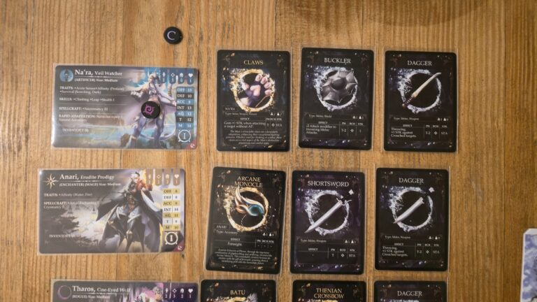
Na'ra has a weak point and her trusty claws, along with a buckler and dagger she has picked up. Between the extra +1 STK on her claws when going after an enemy without action points and her ability to buff herself for free in the strategic phase, this squishy necromancer winds up being a potent melee threat. The buckler is a tiny boost to her otherwise incredibly lackluster durability.
Anari hasn't picked up much in the way of items. Her arcane monocle continues to provide the Foresight effect which doesn't seem particularly useful to me yet. The shortsword and dagger pairing are really just there because she had room and I had the items kicking around. If she ever has to swing one, we're in trouble but at least this way she can engage enemies.
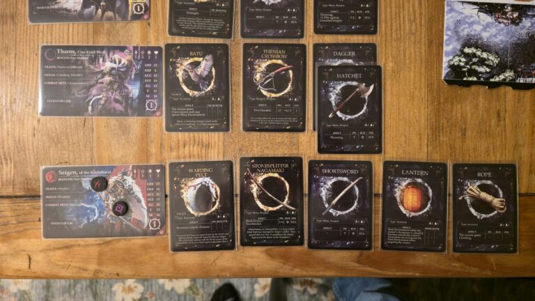
Tharos (and Batu) continue to make good use of that early Thenian crossbow, allowing him to strike with an accurate 16 or less on a d20 and wound on a 19 or less (before factoring in enemy armor) thanks to his Assassination I combat arts. He's also carrying two backup weapons in the dagger and hatchet, both of which can be thrown to take advantage of his decent ACC.
Seigen is bringing over a wound and a weak point into this mission, but he's also the most decked out. His recently acquired warding pelt will help against any spells or profane attacks. The Stonesplitter Nagamaki and shortsword give him two different options for close combat -- the latter is helpful if he's sharing a space with allies because I don't want to catch Na'ra in the sweep of the massive two handed sword. He's also equipped with a rope which means three of my four party members have Climbing. The lantern is just hanging out in case it's useful at some point and I figured if anyone was going to carry it, it'd be the big man himself.
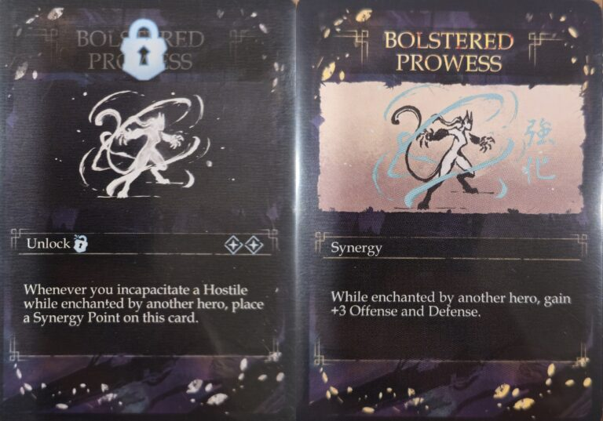
I find it amusing that after digging through the entire pile of Synergy cards, I wound up picking the same Bolstered Prowess to work on that Sam did. Getting +3 OFF/DEF felt like such a huge upgrade, especially considering Anari is an enchanter and can thus cast these buffs without having to roll. There were a few others I was between, but the fact that I thought I could reliably unlock this in a session is what tipped me over the edge to taking it.
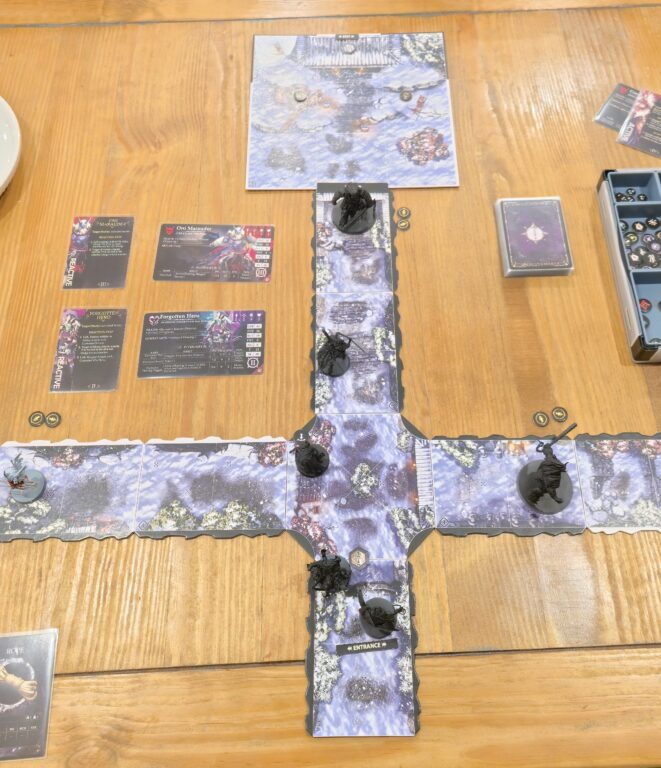
Unlike Sam, I decided to try the stealthy approach to getting through this mission. Knowing that enemies can only see crouched heroes if they're within three tiles of them meant there was a safe space in the central tile of the four-way junction. Each hostile round, the enemies had a special behavior to turn 180 degrees, meaning that even if you couldn't get out of the way, a hero could safely stay crouched there (like Anari is doing in this example).
A very important thing is that all the black tile edges count as solid walls, so they're blocking line of sight. The white edges, however, are not line of sight blocking and it means enemies can see across them. Yes, this is a problem considering I left the Forgotten Hero standing there with a clear line of sight into the final room. We'll get there eventually.
In the meantime, I felt pretty clever for bypassing two enemies and triggered the next encounter. This spawned the second Oni Marauder seen above but also two Superior Loot tokens in the final room. After a brief glance at the loot table, there are some really juicy options there so I 100% planned to snag both of those before the final fight. They were even conveniently placed ahead of the final encounter trigger marker which surely isn't just bait for a greedy idiot like myself.
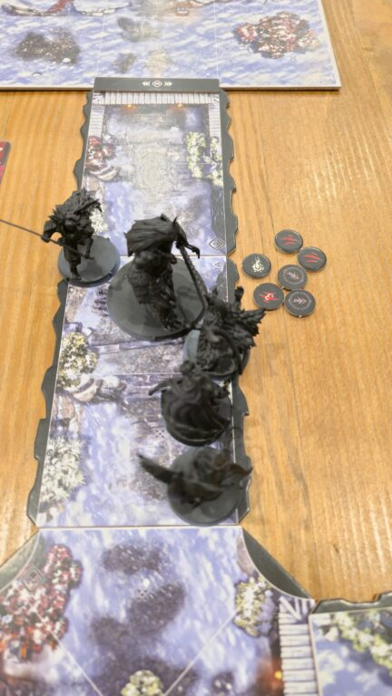
Na'ra and Seigen make quick work of the Oni Marauder. They used to seem far more threatening, but learning to stack buffs and bait out the reactions has meant I can fairly reliably take one out from full health. This time it was a mix of ranged attacks from Anari and Tharos to burn away the Oni's AP, then Seigen and Na'ra beat the crap out of it. It was over-killed by a wound and was poisoned when it went down which is pretty rad.
Patting myself on the back, I moved into the final room and this is where I realized I had a bit of a problem. I couldn't make it to the two loot tokens without being in line of sight of the Forgotten Hero. That skeleton has a pretty wicked ranged attack that not only can do some ranged stabbing, but it also threatens to poison my heroes for further damage and has Stagger which drains their action points.
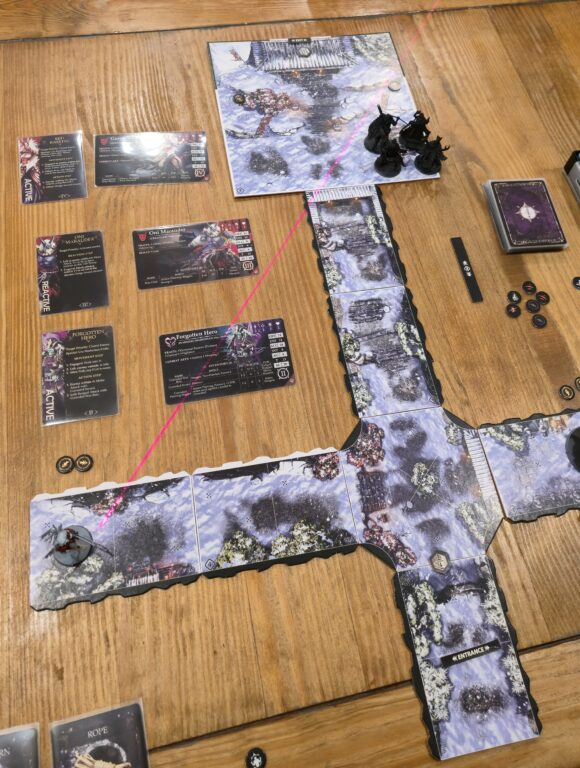
I was trying to figure out how I wanted to handle this when I passed over to the enemy turn. So far I haven't called out any of the Chaos cards because they haven't been super impactful, but this time I flipped Terror's Embrace which prompted a party-wide morale test. Seigen is fearless, Tharos and Na'ra passed with flying colors, but Anari...
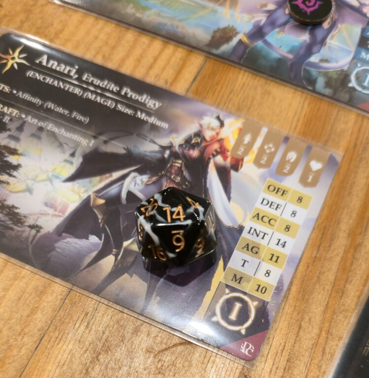
Anari fled away from the surviving Oni Marauder and went straight into line of sight for the Forgotten Hero. He peppered her with arrows and down she went. On my turn, I had Na'ra bring Anari back up with some necromantic flavored healing before failing an attempt at buffing Tharos's ranged attacks. Since Anari was incapacitated at the start of my turn, she didn't gain any action points and thus couldn't buff Tharos either. Tharos was only able to get a single point of damage off but I positioned him so he could react to the Forgotten Hero's upcoming attacks and hopefully finish the undead off.
Fortunately, that's exactly what happened in the following hostile turn. The skeleton shot Tharos, Tharos shot back in response, and the Rin managed to win the confrontation to take out the skeleton. Hooray. The initial Oni Marauder continued to spin around in circles because he had no idea where we were.
Feeling fairly good about my positioning, I started the hero turn with Na'ra giving herself Necrotic Wound per usual thanks to her Artificer class (this granted her Cleave, basically doubling her damage and Poison II, poisoning the target and forcing them to take a penalized save or take more damage). Anari lit Seigen's sword on fire again and then I ran Seigen into the final encounter token which caused the terrifying Red Rasetsu, Guren, to join the fray. Holy shit, she's scary.
That said, I got darn close to one-rounding her. Between a few pot-shots from Anari and Tharos (causing Guren to dodge back and forth between the two), Seigen's flaming sword, and a juiced up Na'ra with her Necrotic Wound enchanted claws, I was able to push through six damage and poison onto Guren. This was after she shrugged off two damage due to her Berserker class benefit, too. All I needed was to pass the turn and have her roll a 10 or higher on a T check at the start of the monster turn and she's go down before getting to activate.
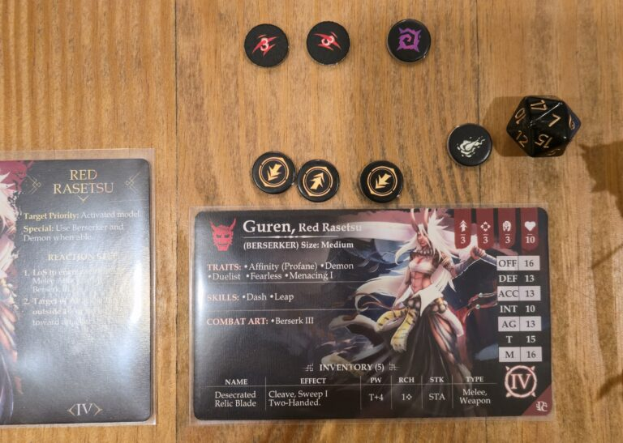
Yeah, she rolled a 7 and the pain train was coming to town. For her first attack, she swung into Seigen. Guren is the first encounter where the enemy can exploit weak points on the characters. When she does so, she does the normal thing of turning a hit into a crit but it also applies the Unstoppable trait to her attack. This means no matter what the results are of a confrontation, successful rolls do not block and anything rolling low enough to hit will go through for both parties. In what is probably the most cinematic ending possible, Seigen and Guren managed to stab each other. Seigen's damage went through, bringing Guren down to below the threshold to trigger the cutscene. Seigen had a large, desecrated relic blade shaped hole in him but he was still (unsteadily) on his feet meaning none of my heroes went down during this insane fight.
The two superior loot tokens gave my heroes some pretty nice swag. One was an accessory that allows a failed AG roll to be rerolled. I imagine this will be a second chance on a dodge 99% of the time. Continuing the defensive trend, I picked up a healing potion and some modified light protection to further boost the ARM of one of my characters. I haven't fully decided where these will all end up, but I'm currently leaning toward giving Na'ra one of them and Anari the other.
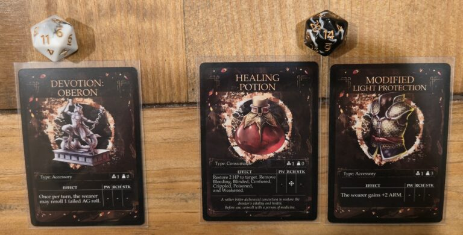
The secret log that I read after removing enough wounds from Guren is that she's pretty insane and thought this was a lot of fun. However, her boss recalled her so we'll probably meet again in the future. A Guildsworn Knight meets up with the battered party, tends to their wounds (which also lets the party level up!), and lets the party know the three options available to them. Mount Akashi is where Guren hangs out and it says Marauders are common. Mount Senjo has "countless undead" lead by the Blue Rasetsu. Shimodani, the Shivering Valley, is more of a mystery. It has unpredictable weather, is governed by "???" and has a warning that it isn't for inexperienced players.
I haven't decided where to go yet. Given that Sam is taking the Mount Akashi path, I'm tempted to try one of the others just so we can get some more variety. On the other hand, it could be cool to see how two playthroughs of the same path could diverge. If anyone has suggestions, I'm all ears!
Final Thoughts
Sam: My playthrough of this missions really hammered home just how swingy this ruleset can be. I went through the first three bad guys like prune juice through a short grandmother thanks to (not very many) lucky rolls; Guren nearly took out my whole party thanks to even fewer good rolls on her end. I thought this was a "supposed to lose" fight and, frankly, I wouldn't be surprised if more than half of the people who try this scenario do lose it, especially if they're less cautious than me. That said, losing still progresses the campaign, so it's really more of a cinematic to introduce you to one of the big villainesses of the setting.
What I'm really seeing here is that a key strategy going forward will be to attack a big Hostile to draw out their AP making useless Reactions (many hostiles, when attacked from range, will merely Dodge closer to the attacker), then, when they're out of AP, blitz them down; Seigen and Anari have three-hit attacks, and even Tharos can force two damage rolls if you enchant him with Burn. It's an effective strategy; not without risks, but it's safer than getting into Confrontations with Oni. But we'll see how long it works.
Jake: I feel like I had substantially better luck in this mission than any of the previous ones. I was able to alpha strike most of the threatening enemies with overwhelming force before they were able to cause too much harm to the party. Part of it was some hot dice, but I'd like to think I'm also maybe getting a little better? Time will tell.
I definitely agree with Sam about an effective tactic being action point baiting. It makes me want to pick up some dinky ranged weapon for Seigen to be able to use even if it won't be threatening much damage -- simply making an attack from far away can be monumentally important. I'm not sure how much sway we have over what loot shows up, but it's something I'll be on the lookout for.
I also need to remember enchantments can go on Tharos, because I really like the sound of Burning Touch (or the armor ignoring Melting Touch now that Anari has leveled up!) going onto his crossbow.
For anyone who's been following along, are there any preferences on which route I take? Tell me in the comments or in the Tabletop Battles Discord server!
Have any questions or feedback? Drop us a note in the comments below or email us at contact@tabletopbattles.com. Want articles like this linked in your inbox every Monday morning? Sign up for our newsletter. And don't forget that you can support us on Patreon for backer rewards like early video content, Administratum access, an ad-free experience on our website, and subscriber-only content covering competitive Warhammer 40K!Originally published on Goonhammer.


Leave a Comment